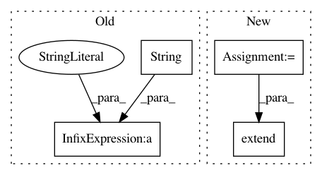

1bb6665d4726547dd79c6b38615cef6ca50e346f,deeplift/keras_conversion.py,,dense_conversion,#Any#Any#Any#,67
Before Change
to_return = [blobs.Dense(name=name,
W=layer.get_weights()[0],
b=layer.get_weights()[1])]
to_return.extend(activation_conversion(layer, "activ_"+str(name),
mxts_mode=mxts_mode))
return to_return
After Change
def dense_conversion(layer, name, mxts_mode):
//mxts_mode not used
converted_activation = activation_conversion(layer, name,
mxts_mode=mxts_mode)
to_return = [blobs.Dense(
name=("preact_" if len(converted_activation) > 0
else "")+name,
W=layer.get_weights()[0],
b=layer.get_weights()[1])]
to_return.extend(converted_activation)
return to_return
def prelu_conversion(layer, name, mxts_mode):
In pattern: SUPERPATTERN
Frequency: 3
Non-data size: 4
Instances
Project Name: kundajelab/deeplift
Commit Name: 1bb6665d4726547dd79c6b38615cef6ca50e346f
Time: 2016-05-20
Author: avanti.shrikumar@gmail.com
File Name: deeplift/keras_conversion.py
Class Name:
Method Name: dense_conversion
Project Name: kundajelab/deeplift
Commit Name: 1bb6665d4726547dd79c6b38615cef6ca50e346f
Time: 2016-05-20
Author: avanti.shrikumar@gmail.com
File Name: deeplift/keras_conversion.py
Class Name:
Method Name: conv2d_conversion
Project Name: tensorlayer/tensorlayer
Commit Name: 539a9e38bb85628431f53b35ecdca746991474c7
Time: 2019-03-05
Author: 37874862+warshallrho@users.noreply.github.com
File Name: tensorlayer/models/vgg.py
Class Name: VGG
Method Name: restore_weights